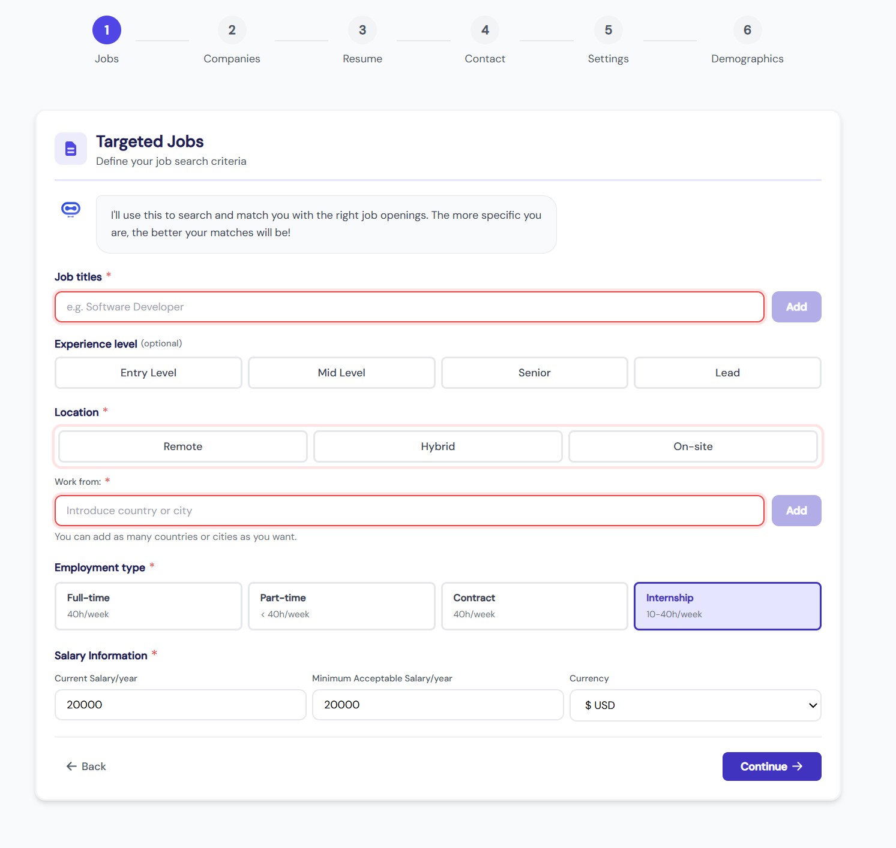

Jobboyo automatiserar jobbsökningen åt dig – från att hitta rätt tjänster till att skicka skräddarsydda ansökningar. Du väljer, AI:n jobbar.
Utforska tjänsten ↓
Lägg till din bild härJobboyo kombinerar AI-automatisering med mänsklig kontroll. Du sätter preferenserna, AI:n gör grovjobbet – och du väljer vilka intervjuer du vill ta.
Du laddar upp ditt CV en enda gång. Det sparas i systemet och anpassas sedan automatiskt för varje enskild tjänst med justerade nyckelord och relevant erfarenhet lyft fram. Aldrig mer manuell uppladdning.
Välj plats, bransch, erfarenhetsnivå, lönenivå och hur mycket du vill jobba. AI:n lär sig dina önskemål och blir smartare för varje gång du godkänner eller avvisar en matchning.
Varje dag skannar Jobboyo tusentals jobbannonser från officiella karriärsidor och stora jobbsajter. Falska annonser filtreras bort automatiskt – du ser bara seriösa möjligheter.
Inget skickas utan ditt godkännande på Premium och Max. Du ser exakt vad Jobboyo kommer säga – det anpassade CV:t, personliga brevet och svaren på urvalsfrågor – och godkänner med ett klick.
Jobboyo skickar skräddarsydda ansökningar på dina vägnar. Varje brev refererar till specifika jobbannonsen och är skrivet i din röst – rekryterare märker ingen skillnad.
När intervjukallelserna börjar trilla in väljer du vilka du vill ta. Jobboyo har gjort grovjobbet – du fokuserar på det som faktiskt spelar roll: att visa upp dig.
Med Jobboyos breda urval av filter ser du till att varje ansökan faktiskt matchar dina egna villkor – inte bara arbetsgivarens krav.
Filtrera på stad, region eller hela landet. Jobbyo garanterar geografisk träffsäkerhet – inga irrelevanta träffar från fel ort.
Matcha exakt din nivå – junior, mellannivå eller senior – för att undvika att söka jobb du är över- eller underkvalificerad för.
Se faktiska löneintervall direkt i sökresultaten. Inga gissningar – du vet vad du är värd och vad tjänsten betalar innan du ens ansöker.
Välj en eller flera branscher du är intresserad av. AI:n håller sig till ditt område och undviker irrelevanta förslag utanför din sektor.
Ange om du vill ha heltid, deltid, projektanställning eller frilansjobb. Du styr hur mycket du vill jobba – Jobboyo respekterar det.
AI:n identifierar och hoppar automatiskt över misstänkta eller falska annonser. Du söker bara till legitima arbetsgivare.
Tre nivåer med olika grader av automatisering, kontroll och support. Ingen bindningstid – avsluta när du vill. 20 % rabatt vid kvartalsbetalning.
Om du inte fått minst en intervjukallelse inom 30 dagar återbetalas hela beloppet – inga frågor ställs. Gäller under förutsättning att du haft en aktiv profil och godkänt ansökningar under perioden. Det är ett smart drag som sänker tröskeln för nya användare och signalerar ett genuint förtroende för att produkten levererar.
Jobboyo är ett AI-drivet verktyg för jobbsökning som gör det möjligt att automatisera stora delar av ansökningsprocessen. Det som gör tjänsten unik jämfört med vanliga jobbsajter är att den inte bara hjälper dig att hitta jobb – den söker och ansöker åt dig.
En av de största fördelarna med Jobboyo är hur smidigt och lättanvänt det är. Du behöver bara ladda upp ditt CV en gång – sedan anpassar Jobboyo det automatiskt för varje enskild tjänst, med justerade nyckelord och relevanta erfarenheter lyfta fram beroende på rollen. CV:t sparas i systemet och behöver alltså aldrig laddas upp igen, vilket sparar enormt mycket tid och krångel. När man väl kommer in på sidan är det tydligt och lättnavigerat med klara instruktioner om hur man går till väga – även den som aldrig använt ett liknande verktyg förstår snabbt vad som ska göras.
Verktyget erbjuder filtrering efter plats, erfarenhetsnivå och lönenivå, och visar faktiska löneintervall direkt i sökresultaten så att du vet vad som förväntas innan du ens söker. Du kan också ange bransch och hur mycket du vill jobba, vilket gör att de ansökningar som skickas faktiskt matchar dina egna villkor och önskemål – inte bara arbetsgivarens. AI:n söker igenom tusentals jobbannonser dagligen och ju mer du interagerar och ger feedback, desto smartare blir systemet på att förstå vad du letar efter. På de dyrare planerna har du dessutom full kontroll: ingenting skickas utan ditt godkännande – du kan granska varje ansökan, redigera detaljer eller avvisa jobb som inte passar, allt med ett enda klick.
Det är svårt att överskatta hur mycket tid Jobboyo kan spara. Enligt Jobboyo tar en genomsnittlig jobbsökning fem månader och kräver över 50 ansökningar. Att göra allt det manuellt – söka efter tjänster, fylla i formulär, skriva personliga brev – tar hundratals timmar. Med Jobboyo sker det mesta automatiskt i bakgrunden medan du fokuserar på annat.
Det finns tre prisplaner: Starter för 29 dollar i veckan med automatiska ansökningar, Premium för 59 dollar i veckan med smartare matchning och full kontroll, samt Max för 99 dollar i veckan som även inkluderar ett personligt startsamtal, dedikerad support och en intervjugaranti. Kostnaderna kan kännas höga, men det finns ingen bindningstid och man kan avsluta när som helst.
Det som verkligen sticker ut är pengarna-tillbaka-garantin på Max-planen: om du inte fått minst en intervjukallelse inom 30 dagar återbetalas hela beloppet utan frågor – förutsatt att du haft en aktiv profil och godkänt ansökningar under perioden. Det är ett smart drag från Jobboyo, eftersom det sänker tröskeln för nya användare och gör att fler vågar testa tjänsten. Det signalerar också ett genuint förtroende för att produkten faktiskt levererar.
Jobboyo är ett imponerande och genomtänkt verktyg för den som söker jobb på allvar. Kombinationen av enkelhet, smarta filter, tidsbesparande automatisering och en trygg garanti gör det till ett starkt alternativ. Precis som jag nämner tror jag att jag kommer ha stor nytta av det i framtiden – kanske när jag är klar med skolan eller vid ett karriärskifte – då man verkligen behöver effektivisera en annars tidskrävande process.